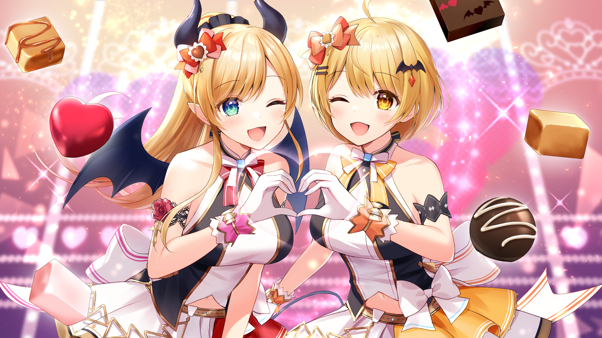
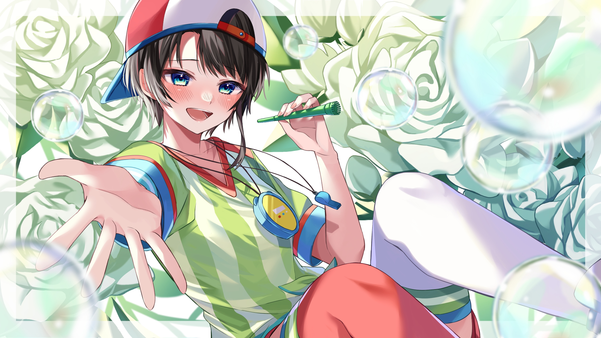

Présentation des membres de Hololive Gen 2.
Cette génération est la deuxième vague de Vtuber sous Hololive .
Aqua Minato
Aqua Minato est une fille étourdie qui est souvent victime des blagues au sein de hololive . Elle possède un cara-design de maid
Cliquez pour écouter
Murasaki Shion
Shion a un tempérament de gamine effronté qui parle sans se soucier des sentiments des autres .
Cliquez pour écouter
Nakiri Ayame
Ayame Nakiri est la représentation d'une princesse démon , de ce fait elle se fait beaucoup appeler "princesse" par ses collaborateurs
Cliquez pour écouterYuzuki Choco
Yuzuki Choco a le cara-design d'un proffeseur mais également d'une succube . Coco était dcteur dans une école de démon et était très aprécié par son personel .
Cliquez pour écouterOozora Subaru
Subaru est une fille très optimiste . Elle a une apparence de Garçon manqué et est également très extravertie .
Cliquez pour écouter